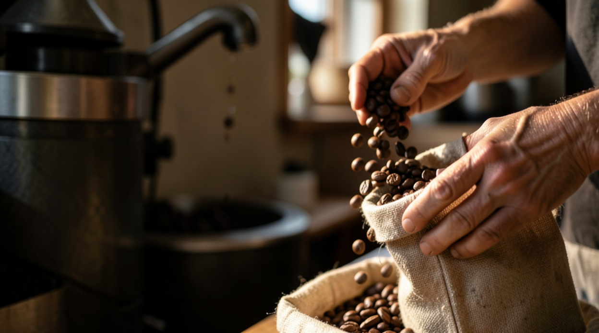

01
Відбір зеленого зерна (84+ балів SCA)
Працюємо з добірними specialty-лотами та перевіряємо їхню якість до обсмаження.
СМАЖЕНА КАВА · ROAST-TO-ORDER
«Смажена кава» — крафтова обсмажувальна майстерня, де кожне замовлення стає початком роботи з зерном. Ми працюємо за моделлю Roast-to-Order: обсмажуємо каву після замовлення, а не зберігаємо готові пачки на складі.

НАША ІСТОРІЯ
Проєкт «Смажена кава» створили з простого бажання ділитися кавою, смак якої розкривається саме таким, яким його задумали природа й обсмажувач. Невеликий формат майстерні дає змогу приділяти увагу окремому лоту, а не працювати на обсяг заради обсягу.
Ми працюємо напряму з імпортерами specialty-зерна та відкрито розповідаємо про його походження, обробку й смаковий профіль. Обсмаженої кави на складі не тримаємо: свіжий лот готуємо після отримання замовлення, щоб він якомога швидше потрапив до вашої чашки.
Прозоре походження. Свіже обсмаження. Жодного складського запасу готової кави.
НАША ВІДПОВІДАЛЬНІСТЬ
01
Працюємо з добірними specialty-лотами та перевіряємо їхню якість до обсмаження.
02
Підбираємо профіль обсмаження на ростері, щоб зберегти характер конкретного зерна.
03
Перевіряємо кожну партію на смак перед пакуванням і відправкою замовлення.
ВІД ЗАМОВЛЕННЯ ДО ЧАШКИ
Кожна пачка проходить свій шлях до вас — без очікування на складі.
Ви обираєте каву в каталозі або складаєте власний мікс.
Підбираємо й відтворюємо профіль для обраного зерна та способу приготування.
Даємо зерну відпочити й пакуємо його в герметичний пакет із клапаном.
Передаємо свіжу каву в доставку в день її обсмаження.
Створіть поєднання зерен, яке пасуватиме саме вам.
Створити свій мікс